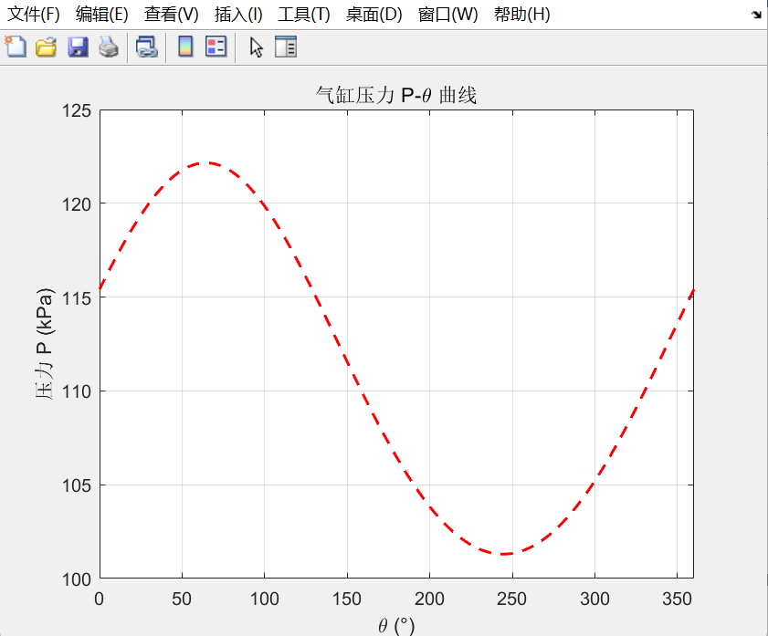
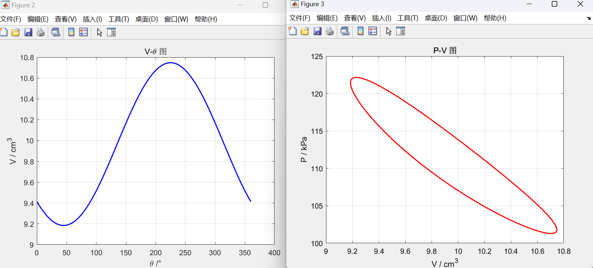
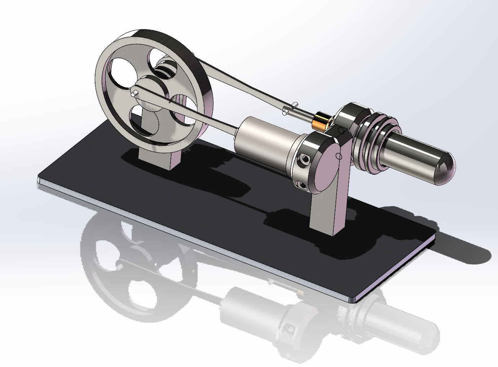
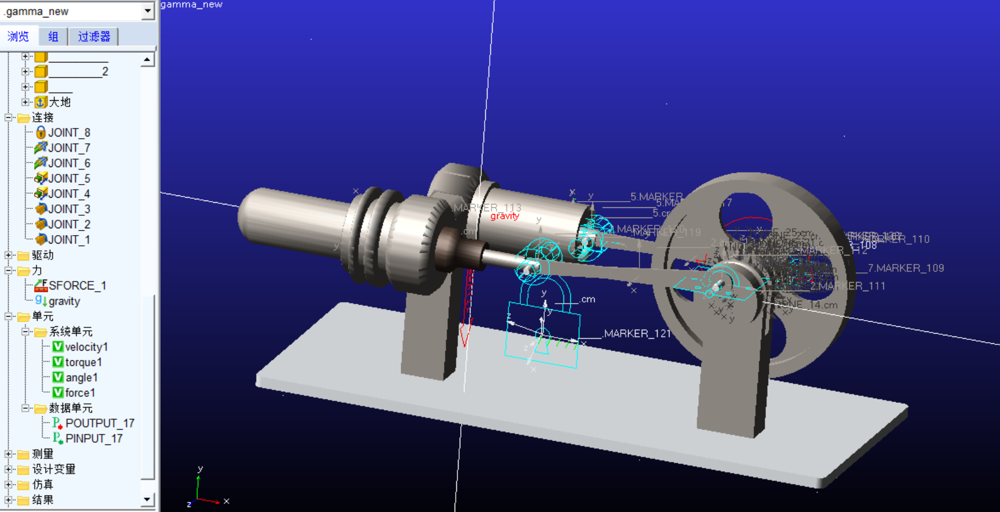
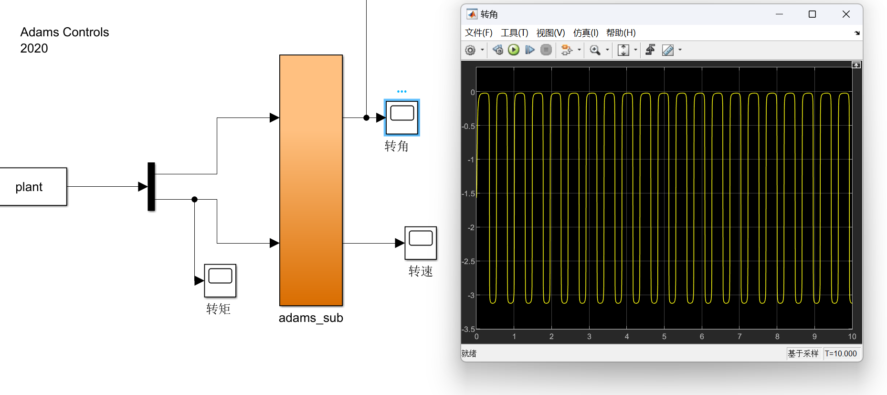
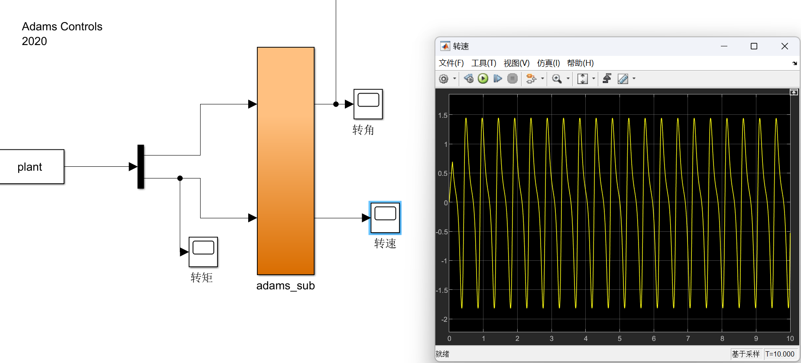
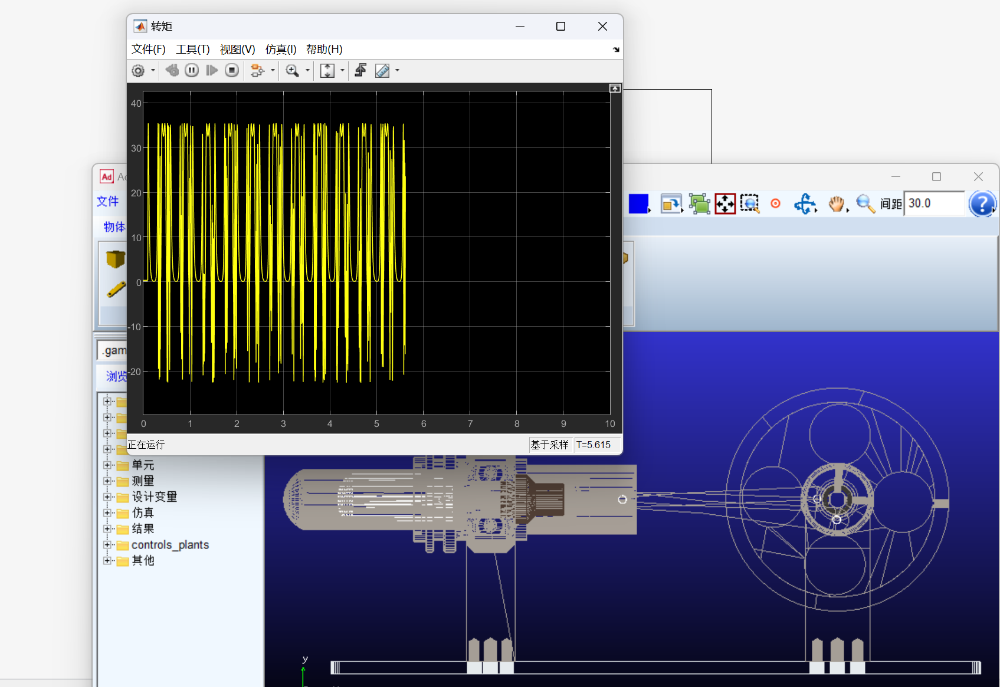

| 课程 | 工程设计（热力学方向） |
| 研究课题 | Gamma型斯特林发动机的ADAMS-MATLAB联合仿真分析 |
| 核心工具 | SolidWorks / ADAMS / MATLAB Simulink |
| 设计目标 | 输出功率≥0.5 W，额定转速1500 r/min |
本项目以Gamma型斯特林发动机为研究对象，从热力学理论出发，经历结构参数设计→三维建模→多体动力学仿真→联合仿真平台搭建的完整工程流程，实现了热力学计算与机械动力学的跨域耦合仿真。
斯特林循环由四个基本过程组成，是一种外燃式闭式循环：
单次循环理论做功：
\[ Wi = W34 + W12 = mRg(TE - TC) · ln(Vmax)/(Vmin) = 0.2880 J \]
在回热器效率etaR = 1的理想条件下，热效率达到卡诺效率：
\[ eta = (Wi)/(Qin) = (TE - TC)/(TE) = 40.0% \]
项目采用史密特（Schmidt）理论对Gamma型发动机进行准稳态热力学分析。核心假设包括：等温压缩/膨胀、理想气体、完全再生热交换、正弦容积变化。
以排气器活塞上止点为曲柄角θ = 0^°，膨胀空间与压缩空间瞬时容积为：
\[ VE = (VSE)/(2)(1 - cosθ), VC = (VSE)/(2)(1 + cosθ) + (VSC)/(2)[1 - cos(θ - α)] \]
瞬时压力由压力方程给出：
\[ p = (pmean√1 - δ2)/(1 - δcos(θ - φ)) \]
其中δ = B/S，B、S为由温度比tau = TC/TE、行程容积比kappa和死容积比chi确定的参数。
| 参数 | 数值 |
|---|---|
| 活塞直径DP | 12 mm |
| 活塞行程SP | 11.8 mm |
| 相位角α | 90^° |
| 全死容积比chi | 8.020 |
| 计算平均气压pmean | 11583 Pa |
| 温度比tau = TC/TE | 0.48 |
利用史密特理论公式，通过MATLAB计算气压-曲柄角曲线与p-V图：


V-θ图与p-V图（闭合环路面积=单次循环做功）" onclick="openLightbox(this)">在SolidWorks中精确构建Gamma型斯特林发动机的连杆、飞轮、活塞等关键部件，将Parasolid格式导入ADAMS进行动力学仿真。


在ADAMS中定义多种运动副实现真实的机械运动关系：
定义4个状态变量：torque1（输入力矩，从Simulink获取）、angle1（轴转角）、velocity1（连杆转速）、force1（输入力），实现ADAMS与MATLAB的数据交互。
在MATLAB/Simulink中编写plant.m S-Function，实现史密特理论的实时计算：转角θ作为输入，根据史密特公式计算瞬时气缸压力p、活塞作用力Fp = (p - pair)Ap、曲柄转矩Tq = Fp r(sinθ - cosθ)，输出转矩反馈至ADAMS驱动机械系统运动。



初始仿真转速约90 r/min，低于设计目标。分析原因：
通过调整关键参数实现目标转速：
经过多轮参数调整，最终实现1500 r/min的设计目标转速。